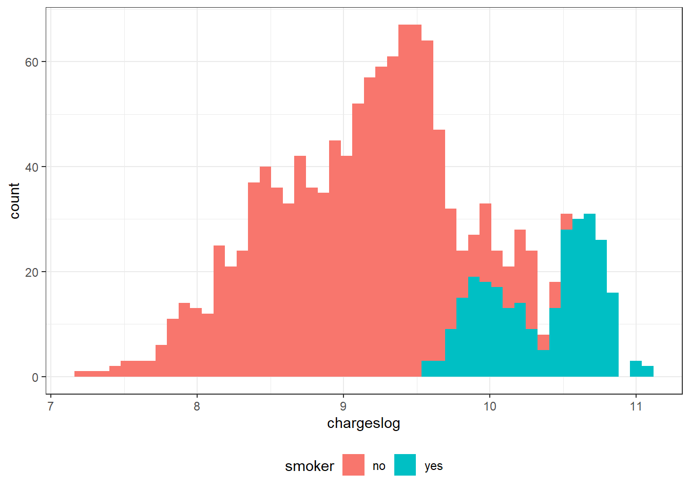
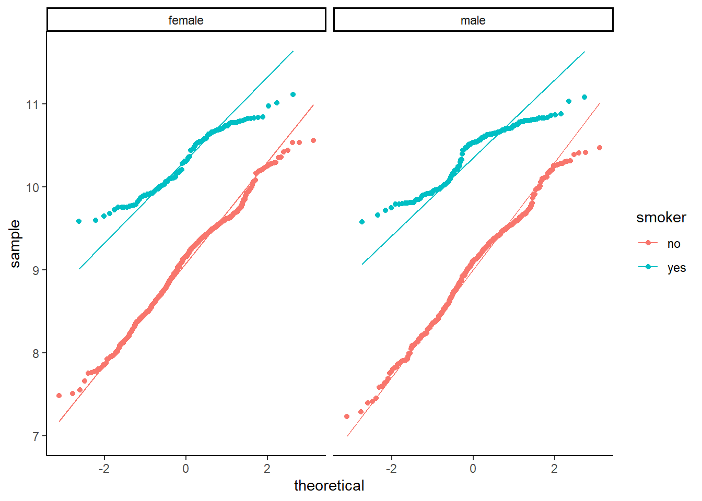

The aim is to visualize the effects of smoking on insurance charges.
Data
Code
library(tidyverse)
── Attaching core tidyverse packages ──────────────────────── tidyverse 2.0.0 ──
✔ dplyr 1.1.2 ✔ readr 2.1.4
✔ forcats 1.0.0 ✔ stringr 1.5.0
✔ ggplot2 3.4.2 ✔ tibble 3.2.1
✔ lubridate 1.9.2 ✔ tidyr 1.3.0
✔ purrr 1.0.1
── Conflicts ────────────────────────────────────────── tidyverse_conflicts() ──
✖ dplyr::filter() masks stats::filter()
✖ dplyr::lag() masks stats::lag()
ℹ Use the conflicted package (<http://conflicted.r-lib.org/>) to force all conflicts to become errors
Code
library(ggplot2)library(gtsummary)library(here)
here() starts at C:/Users/iw21u138/Documents/R_project_template/project-template-main
Code
dat <-read_csv(here("data/raw/insurance_with_date.csv"))
Rows: 1338 Columns: 9
── Column specification ────────────────────────────────────────────────────────
Delimiter: ","
chr (3): sex, smoker, region
dbl (5): X, age, bmi, children, charges
date (1): date
ℹ Use `spec()` to retrieve the full column specification for this data.
ℹ Specify the column types or set `show_col_types = FALSE` to quiet this message.
This histogram shows that the data is not normalized. In order to do a T-Test on the data, we have to logarithmise the charges.
Inferential Statistics
Logarithmise the charges
Code
dat$chargeslog <-log(dat$charges)dat$chargeslog
Histogram of charges
Code
ggplot(dat, aes(x=chargeslog, fill = smoker)) +geom_histogram(bins=50) +theme_bw() +theme(legend.position="bottom")

Test normality
Code
dat %>%ggplot(aes(sample = chargeslog, fill = smoker, colour = smoker)) +geom_qq_line(distribution = stats::qnorm) +geom_qq(distribution = stats::qnorm) +xlab("theoretical") +ylab("sample") +theme_classic() +facet_wrap("sex")

T-Test charges smokers vs. non-smokers
H0: Smoking is not associated with the insurance charges HA: Smoking is associated with insurance charges
Code
t.test(chargeslog ~ smoker, data = dat)
Welch Two Sample t-test
data: chargeslog by smoker
t = -45.282, df = 691.25, p-value < 2.2e-16
alternative hypothesis: true difference in means between group no and group yes is not equal to 0
95 percent confidence interval:
-1.364586 -1.251169
sample estimates:
mean in group no mean in group yes
9.051573 10.359450
Source Code
---title: "Report assignment"author: "Isabelle Wethli"format: html: toc: true code-fold: show code-tools: true df-print: paged embeded-resources: true ---## IntroductionThe aim is to visualize the effects of smoking on insurance charges.## Data```{r}library(tidyverse)library(ggplot2)library(gtsummary)library(here)dat <-read_csv(here("data/raw/insurance_with_date.csv"))str(dat)dataselect <- dat |>select(sex, bmi, smoker, charges, region) |>mutate(sex =factor(sex, levels=c("male", "female"), labels=c("m","f")),smoker =factor(smoker))```## Descriptive StatisticsThis helps to visualize the effect of smoking on insurance charges.```{r}tabl_summary <- dat |>tbl_summary(by = smoker,type =all_continuous() ~"continuous2",include =c("charges","bmi","age"),statistic =all_continuous() ~c("{mean} ({sd})", "{median} ({p25}, {p75})", "{min}, {max}") )tabl_summary```## Boxplot 1: Smokers vs. Non-Smokers - Who has more charges?```{r}ggplot(dataselect, aes(x=smoker, y=charges, fill = smoker)) +geom_boxplot() +ggtitle(label ="Smokers vs. Non-Smokers") +xlab(label ="") +ylab(label ="Charges from insurance") +theme_bw() +theme(legend.position="bottom") ```Histogram of charges```{r}ggplot(dat, aes(x=charges)) +geom_histogram(bins=50)```This histogram shows that the data is not normalized. In order to do a T-Test on the data, we have to logarithmise the charges.## Inferential StatisticsLogarithmise the charges```{r}#| output: false dat$chargeslog <-log(dat$charges)dat$chargeslog```Histogram of charges```{r}ggplot(dat, aes(x=chargeslog, fill = smoker)) +geom_histogram(bins=50) +theme_bw() +theme(legend.position="bottom") ```Test normality```{r}dat %>%ggplot(aes(sample = chargeslog, fill = smoker, colour = smoker)) +geom_qq_line(distribution = stats::qnorm) +geom_qq(distribution = stats::qnorm) +xlab("theoretical") +ylab("sample") +theme_classic() +facet_wrap("sex")```## T-Test charges smokers vs. non-smokersH0: Smoking is not associated with the insurance charges HA: Smoking is associated with insurance charges```{r}t.test(chargeslog ~ smoker, data = dat)```